flowchart LR A["Raw studbook<br/>Excel or CSV"] --> B["Quality Control<br/>(Input tab)"] B --> C["Pedigree<br/>(Pedigree Browser tab)"] C --> D["Potential Parents<br/>tab"] C --> E["Age-Sex Pyramid<br/>tab"] C --> F["Genetic Value Analysis<br/>tab"] C --> G["Breeding Groups<br/>tab"] F --> G G --> H["Genetic Diversity<br/>tab"] F --> H
nprcgenekeepr: Purpose, Approach, and a Colony Manager’s Guide to Practice
Source:vignettes/articles/colony-manager-guide.qmd
Abstract
nprcgenekeepr provides genetic tools for primate-colony management: studbook quality control, pedigree construction and browsing, age-sex demographic display, genetic value analysis, and breeding-group formation, delivered through both a Shiny application (runGeneKeepR()) and an exposed R API. This article is a practical, screenshot-illustrated guide for colony managers and primate-center bioinformatics staff, complementing the engineering account in “Engineering nprcgenekeepr 2.0.0” and the six feature-depth articles listed in Section 4. Section 1 explains why the package exists; Section 2 maps its five function groups onto the app’s tabs and onto the two ways to use them (point-and-click or scripted); Section 3 walks a colony manager through the entire application, tab by tab, using the package’s own shipped example pedigree. This article’s own preparation surfaced and fixed three production issues along the way – an Excel-upload defect that could silently corrupt sire/dam IDs, a “Custom” breeding-group sex ratio option with no numeric input, and a shipped example pedigree missing a column the Potential Parents tab needs to demonstrate populated results – each described where it arose rather than glossed over. All claims in this article are current as of 2026-07-17.
Introduction
This article is an onboarding guide to nprcgenekeepr for the audience it was built for: primate-center bioinformatics staff and colony managers evaluating or learning to use the package. It answers three questions in order – why the package exists, how its capabilities are organized, and what it looks like to actually use it – using the Shiny application (runGeneKeepR()) as the walkthrough’s frame of reference.
It is one of three documents that together cover the package from different angles. “Engineering nprcgenekeepr 2.0.0” documents the modular-architecture migration and development process behind the current application – read it for the how it was built story. Six shorter feature articles (linked from Section 4’s table) each walk one capability in depth, directly through the R API rather than the Shiny app. This article does neither of those jobs: it is the practical, tab-by-tab guide to using the application as shipped, aimed at a reader who wants to load a pedigree and get results, not read source code.
Scope. Every claim below describing the current application – tab list, control labels, default values, and any number tied to the package’s own data(examplePedigree) example data – was re-verified directly against the source and a live run of the app, as of 2026-07-17. Nothing here is carried forward uncritically from earlier tutorials.
Section 1 – Purpose: Why nprcgenekeepr Exists
The goal of nprcgenekeepr is to implement genetic tools for colony management. It was initially conceived and developed as a Shiny web application at the Oregon National Primate Research Center (ONPRC) to facilitate analyses that center routinely performs, and has since been enhanced so that its underlying functions can also be used directly in R scripts rather than only through the Shiny interface (see Section 4’s “two ways to use them”).
Captive breeding colonies – rhesus macaques and other nonhuman primates at National Primate Research Centers – need to manage genetic diversity across generations: avoiding the mating of closely related animals, preserving rare alleles carried by relatively few individuals, and forming breeding groups that balance those genetic goals against real behavioral and housing constraints. nprcgenekeepr’s ranking and grouping methodology follows Vinson and Raboin (2015), A Practical Approach for Designing Breeding Groups to Maximize Genetic Diversity in a Large Colony of Captive Rhesus Macaques (Macaca mulatta), Journal of the American Association for Laboratory Animal Science, 54(6), 700-707.
This work has been supported in part by NIH grants P51 RR13986 to the Southwest National Primate Research Center and P51 OD011092 to the Oregon National Primate Research Center.
Section 2 – Approach: The Five Function Groups and Two Ways to Use Them
nprcgenekeepr’s capability is organized around five function groups. Each maps onto one or more tabs in the Shiny application (walked in Section 5) and, for readers who want to script rather than click, onto a feature article that demonstrates the same underlying functions directly through the R API.
| # | Function group | App tab(s) | Read deeper (R-API walkthrough) |
|---|---|---|---|
| 1 | Quality control of studbooks | Input | Studbook Quality Control |
| 2 | Pedigree construction and browsing, including identifying candidate parents for animals with unknown parentage | Pedigree Browser, Potential Parents | Building a Focal-Animal Pedigree Offline |
| 3 | Age-sex demographic display | Age-Sex Pyramid | Age-Sex Pyramid Plots |
| 4 | Genetic value analysis (mean kinship, genome uniqueness) | Genetic Value Analysis, Genetic Value Analysis and Breeding Group Description | Genetic Value Analysis; Validating the Founder-Genome-Equivalent Standard Error |
| 5 | Breeding-group formation and ongoing diversity monitoring | Breeding Groups, Genetic Diversity | Forming Breeding Groups |
The Genetic Diversity and Potential Parents tabs (rows 2 and 5) are recent additions that extend two of the five original groups rather than constituting new ones: Potential Parents extends pedigree construction by proposing candidate parents for animals recorded with unknown parentage; Genetic Diversity extends breeding-group formation by monitoring the diversity of groups once they are formed. Both are covered in Section 5 alongside the tabs they extend.
These five groups compose into one pipeline, from a raw studbook to formed breeding groups:
Two ways to use it. Everything in this pipeline is available both through the Shiny application walked in Section 5 and as directly callable R functions – NAMESPACE exports 182 functions as of 2026-07-17. An open GitHub issue (#37) tracks, function by function, which exports the Shiny app itself exercises versus which exist primarily for scripted or batch workflows; its own most recent re-verification (2026-06-16) predates the current export count, so treat its exact split as directional rather than a precise current figure. The practical takeaway for this article’s audience: if a task in Section 5 feels like it should be scriptable – batch-processing several pedigrees, or running a workflow without a browser – it very likely already is; the six feature articles in Table 1 are worked examples of exactly that.
Section 3 – Practice: A Colony Manager’s Walkthrough
This section walks every tab of the Shiny application in order, using the package’s own shipped example data (data(examplePedigree), data(focalAnimals)) throughout so every step below is reproducible. Start the application with:
(runModularApp() also still launches the application but is deprecated in favor of runGeneKeepR().) The complete online documentation, including the function reference and this article’s companions, is at https://rmsharp.github.io/nprcgenekeepr/.
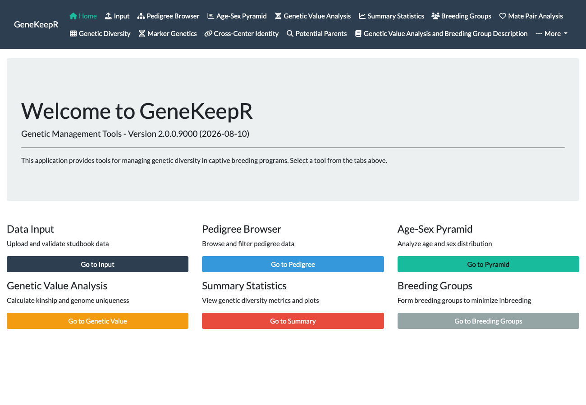
Uploading a Pedigree File
The Input tab’s “Input Format” sub-tab documents the exact file formats and column requirements accepted – consult it directly rather than a description here, since it is kept in sync with the package’s actual reader code and this article is not.

Choose a File Type (Excel or Text) and a File Content option – pedigree only, pedigree and genotypes together or in separate files, or focal animals only (built from a database connection or, offline, from a second uploaded pedigree file) – then browse for the file itself.
Note
Fixed before publication. An earlier draft of this walkthrough found that uploading an Excel workbook shaped like the package’s own shipped example pedigree (several placeholder-parent rows before alphanumeric IDs) silently corrupted the sire/dam columns:
readxlinferred those columns’ type from the early blank rows, guessedlogical, and converted every later alphanumeric ID it could not parse as logical toNA– with no warning surfaced to the user. This affected the same upload path any Excel-format pedigree goes through, not just this example file. Fixed by routing the Excel read through the samecol_types = "text"helper the package’s other Excel readers already use, so both CSV and Excel now round-trip correctly. This walkthrough continues to use CSV below for simplicity, not to work around any remaining defect.
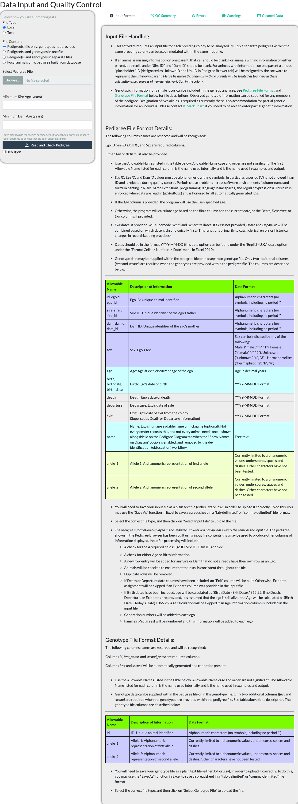
makeExamplePedigreeFile(fileType = "csv")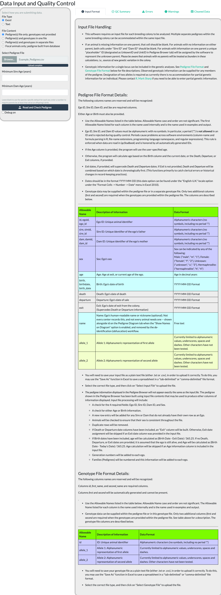
Two optional fields, Minimum Sire Age and Minimum Dam Age, are each left blank by default so that a species- and sex-specific breeding-age default is used automatically; type a number in either field to override that sex’s floor (for macaques, which may reproduce as early as two years of age, a value of 2 is appropriate for both).
Selecting Read and Check Pedigree reads the file and validates it – checking that every required column is present and that the pedigree is internally consistent (parent-of-the-right-sex, no duplicate IDs, valid dates, and more; the full set of checks is listed below). Results appear on the “QC Summary” sub-tab. For the shipped example pedigree read as CSV, this reports Records Processed: 3,694, Errors: 0, Warnings: 1.
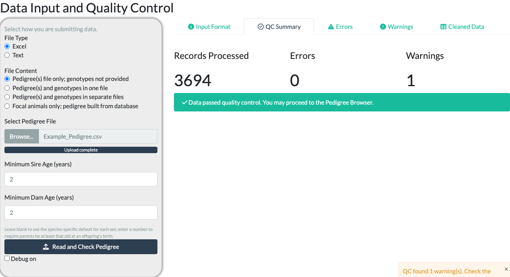
| Error | Definition |
|---|---|
| failedDatabaseConnection | Database connection failed: configuration or permissions are invalid. |
| missingColumns | Columns that must be within the pedigree file are missing. |
| invalidDateRows | Values that are supposed to be dates cannot be interpreted as a date. |
| suspiciousParents | A parent was too young, on the offspring’s birth date, to plausibly be the parent. |
| femaleSires | Individuals listed as female or hermaphroditic and also as a sire. |
| maleDams | Individuals listed as male and also as a dam. |
| sireAndDam | Individuals listed as both a sire and a dam. |
| duplicateIds | IDs listed more than once. |
| invalidIdChars | IDs (id, sire, or dam) containing a disallowed period (‘.’); IDs must be alphanumeric with no symbols. |
| changedCols | Columns renamed to conform to internal naming conventions, and what they were changed to. |
Pedigree Browser
The Pedigree Browser tab displays the pedigree in a paged table (10, 25, 50, or 100 rows at a time) with a Display Unknown IDs option. Unknown IDs (UIDs) are placeholder IDs the application generates, by default starting with the letter U, for the unrecorded parent of an animal with only one known parent.
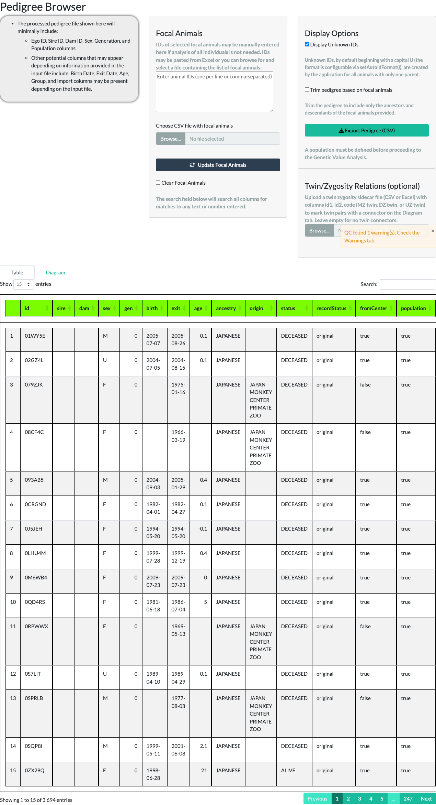
Unchecking Display Unknown IDs removes those placeholder rows. For the example pedigree, the row count reduces from 3,694 to 2,322 – the difference, 1,372, is the number of UNKNOWN placeholder animals the application generated to stand in for unrecorded parents.
Focal animals. The middle panel lets you narrow the browser to a subset of the pedigree – your focal animals – either by typing IDs directly or by uploading a CSV file of IDs.

Typing five IDs (FJS7RQ, H6T2FF, HEVL3L, I04JZV, S63QDN), unchecking Display Unknown IDs, checking Trim pedigree based on focal animals, and selecting Update Focal Animals keeps only those five animals and their ancestors and descendants – 54 animals in total for this example.
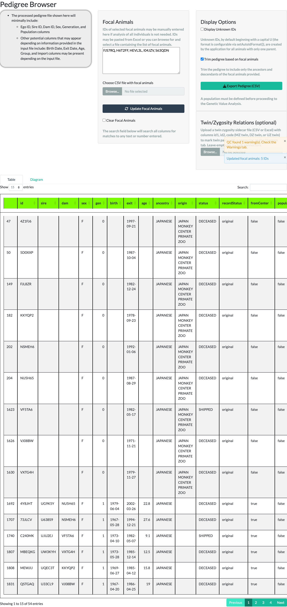
A larger focal-animal list works the same way. The package ships a second example object, data(focalAnimals), with 327 IDs; uploading it as a CSV via Choose CSV file with focal animals and trimming keeps those animals plus everyone needed to connect them – 962 animals in total.
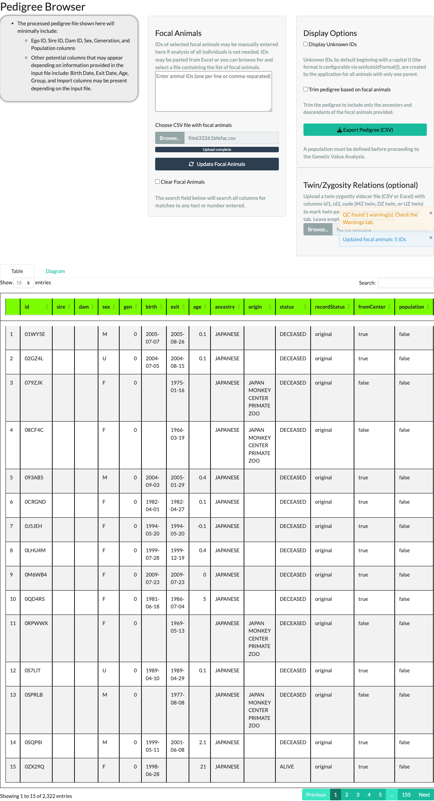
focalAnimals example, 327 IDs).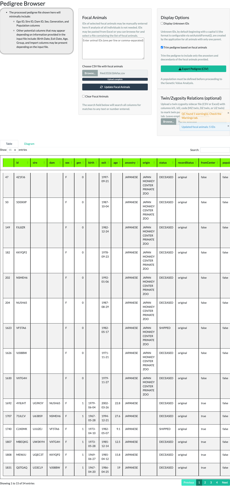
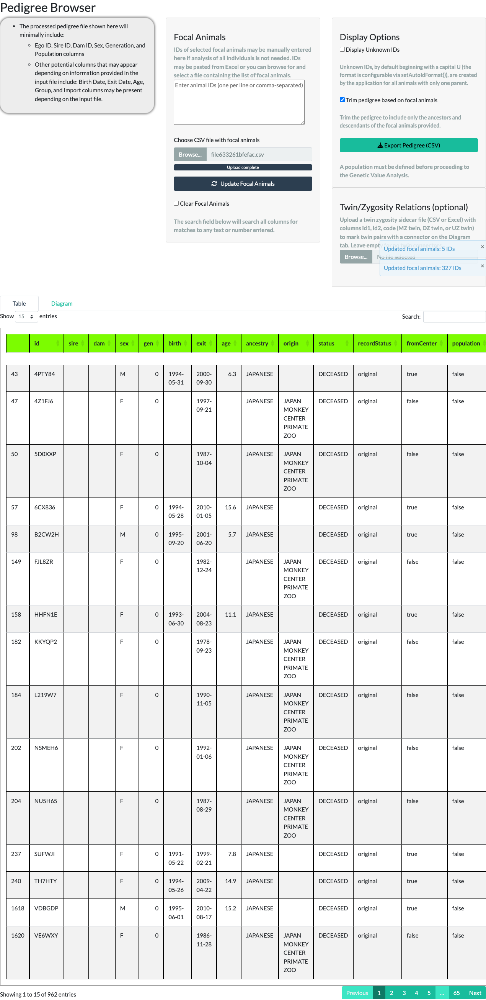
Checking Clear Focal Animals and selecting Update Focal Animals again reads an empty ID list, restoring the full, untrimmed pedigree.
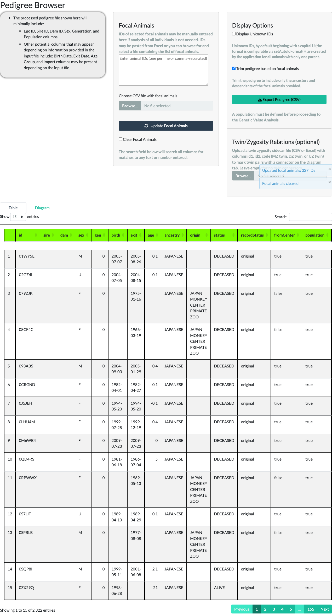
A population must be defined here before proceeding to Genetic Value Analysis. The rest of this walkthrough continues with the full, untrimmed example pedigree (the focal-animal trim above illustrates the feature, not the population used for the remaining tabs) – matching the shipped examplePedigree’s own downstream numbers below.
Age-Sex Pyramid
The Age-Sex Pyramid tab displays a standard population pyramid for whichever pedigree population is currently selected in Pedigree Browser, with options for age units, color scheme, and whether to show counts. For the full example pedigree, it shows 332 living animals (123 male, 209 female).
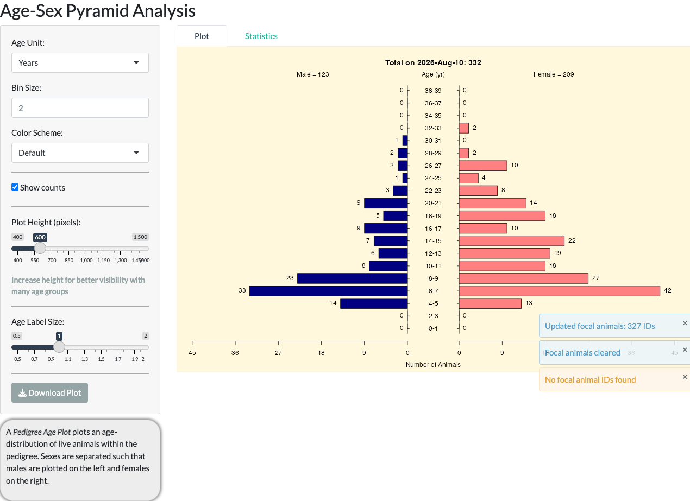
Genetic Value Analysis
The Genetic Value Analysis tab ranks animals by relative breeding value, using mean kinship (how inter-related an animal is with the rest of the current breeding population – lower is better) and genome uniqueness (how likely an animal carries alleles that are rare in the colony and at risk of being lost – higher is better). See the Genetic Value Analysis and Breeding Group Description tab for the full calculation breakdown.
Genome uniqueness is estimated by a gene-drop simulation (MacCluer et al. 1986; Ballou and Lacy 1995): unique alleles are assigned to every pedigree founder and simulated forward through the pedigree according to Mendelian rules. Because it is an estimate, each value carries a sampling standard error (the guSE column) that shrinks roughly with the square root of the iteration count – but what actually matters for breeding decisions is whether the ranking order has stabilized, not just whether guSE is small. The default is 1,000 iterations, which experience with the pedigrees this package has been used on gives a stable selection order; to check whether 1,000 is enough for a specific pedigree, run gvaConvergence() (see the Gene-Drop Iteration Convergence vignette, vignette("gvaConvergence", package = "nprcgenekeepr")).
An optional Kinship Overrides panel accepts a CSV or Excel file of outside-information kinship values (columns id1, id2, kinship) for specific pairs – for example, genotype-confirmed relatedness that disagrees with the pedigree. Overrides apply to rankings, breeding groups, and summary statistics regardless of tab order, though the Summary Statistics relationship label stays pedigree-derived even when its displayed value is overridden.
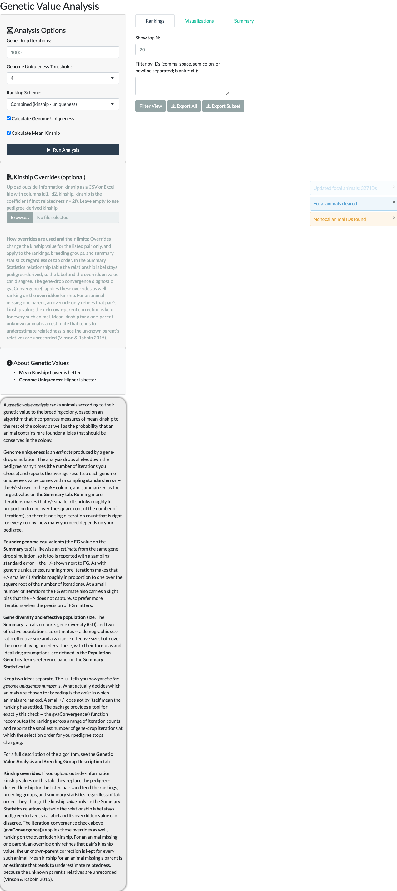
Selecting Run Analysis starts the gene-drop process. When it completes, a results table shows each animal’s rank, mean kinship, genome uniqueness, and a value column classifying it as High Value, Low Value, or Undetermined. “Show top N” and an ID filter control how many rows are displayed.
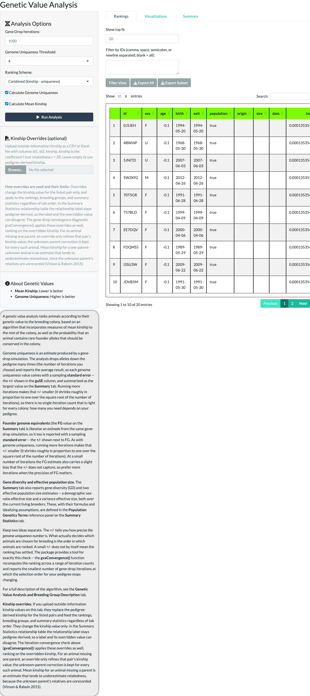
A correction to an older claim. Animals with no recorded parentage (“Undetermined” – typically imports or very young animals not yet assigned parents) are not automatically high value. Since issue #9’s ranking correction (R/modGeneticValue.R:289-301), the results table sorts Undetermined animals to the bottom of the ranking, so a genuinely uncertain genome-uniqueness estimate no longer inflates them to the top. Because the exact row at which values transition from High to Low is a property of one stochastic gene-drop run, this article does not pin a specific row number to it – widening “Show top N” (to 500 below) shows the full distribution instead.
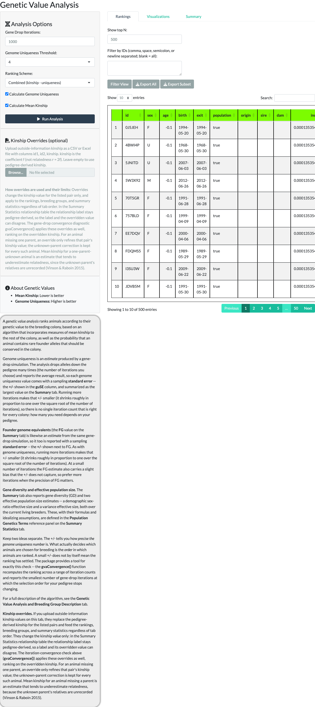
Summary Statistics
The Summary Statistics and Plots tab uses the results from Genetic Value Analysis. Definitions of genome uniqueness and kinship are on the Genetic Value Analysis and Breeding Group Description tab; founder-equivalent and founder-genome-equivalent definitions are at the bottom of this tab (see also “Validating the Founder-Genome-Equivalent Standard Error”).

The tab has several export buttons producing CSV files, three of which are illustrated below (opened in a spreadsheet program, not captured from the app itself, since these depict exported file contents rather than application UI): Export Kinship Matrix, Export First-Order Relationships, and Export Female Founders (a separate Export Male Founders button produces the same column structure for males). The tab also has Export All Relationships and Export Relationship Classes buttons, plus six further buttons for exporting the six summary plots below as PNGs, not illustrated here:
-
The kinship matrix has a row and column for every analyzed individual, plus a first row and first column of IDs.

First few rows of an exported kinship matrix CSV. -
The first-order relationships file has columns
id,parents,offspring,siblings, andtotal, counted from known relationships.
First few rows of an exported first-order-relationships CSV. -
The founders files have columns
id,sire,dam,sex,gen,birth,exit,age,ancestry,origin,status,recordStatus,population, andpedNum.
First few rows of an exported female-founders CSV.
Six plots – histograms and boxplots of kinship coefficients, their Z-scores, and genome uniqueness scores – are shown together and can each be exported as a PNG.

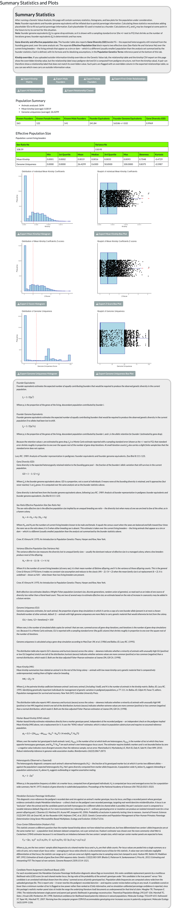
Breeding Group Formation
The Breeding Groups tab forms candidate breeding groups from a source population you choose (top-ranked animals from Genetic Value Analysis, an uploaded list, or all available animals), subject to a maximum kinship threshold, a target number of groups, and a minimum breeding age.
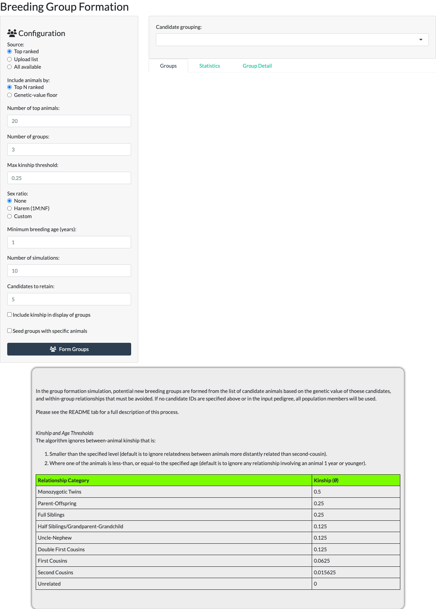
Selecting Form Groups with the number of groups set to 1 produces a single group under the Groups sub-tab.
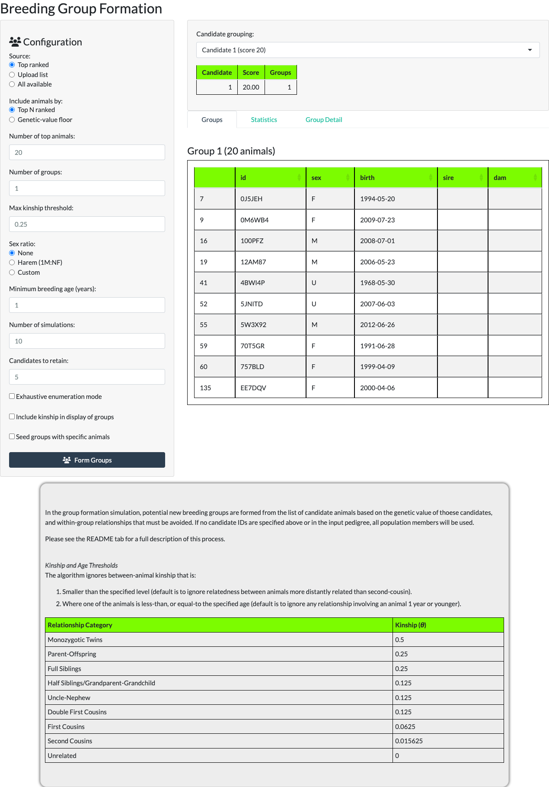
Sex ratio. Three options control how each group’s sex composition is constrained:
- None – sex is not considered when filling groups.
- Harem (1M:NF) – each group is seeded with a single male and filled with females.
- Custom – a “Custom ratio (F per M):” numeric field appears (default 1.0, range 0.5-20.0) targeting an arbitrary females-per-male ratio.
Note
Fixed before publication. An earlier draft of this walkthrough found selecting “Custom” gave no way to enter the desired ratio anywhere in the UI – internally it was treated the same as “None.” Fixed by adding the numeric field described above; group formation now uses that value as the target ratio.
The screenshot below shows one working example: the default 20 top-ranked candidate animals, a target ratio of 2.5 females per male, and “Number of groups” set to 6. Because group formation is a randomized search (the default Number of simulations is 10), the exact number and composition of groups formed varies from run to run rather than reproducing identically – this particular run produced 7 groups, each drawn toward the target ratio where enough candidates of each sex were available.
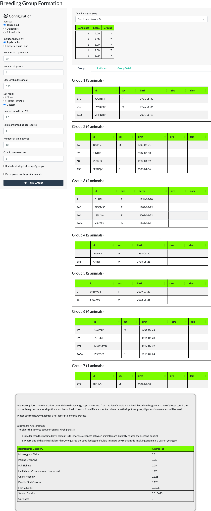
Seeding groups with specific animals. Behavioral constraints – an existing social group, or an infant that should stay with its dam – can be accommodated by checking Seed groups with specific animals, which opens one text area per group for listing the animals that must be assigned to it; the algorithm fills in the remaining membership around those seeds. The screenshot below shows the six text areas this creates for a 6-group run, before any IDs are typed into them.
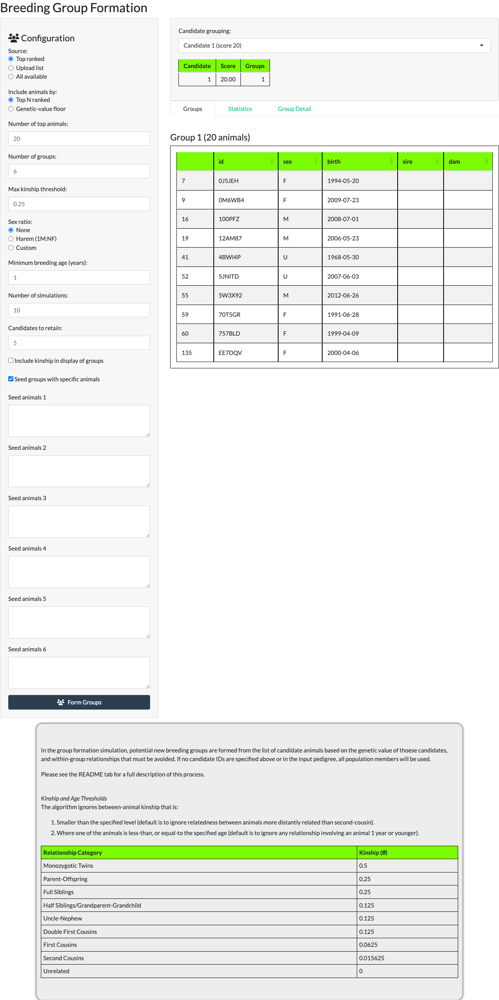
Each formed group’s full membership, and – if Include kinship in display of groups was checked before forming – its within-group kinship values, can be reviewed on the Group Detail sub-tab, one group at a time.
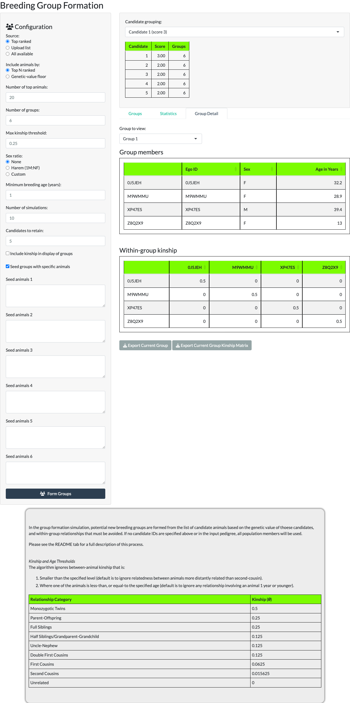
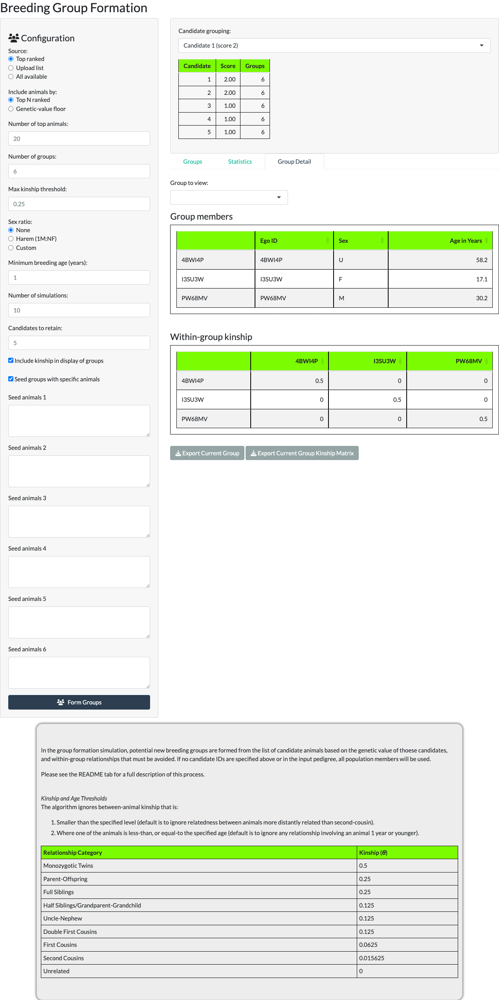
A Statistics sub-tab summarizes all formed groups at once. Groups and their kinship matrices can each be exported individually to a file and location you choose.
Genetic Diversity
The Genetic Diversity tab (issue #112) is new since the package’s original tutorial-era documentation. It monitors the diversity of breeding groups after they are formed: once groups exist (Breeding Groups tab) and a Genetic Value Analysis has been run, it renders a red/yellow/green heat map with one row per group and one column per metric – Value (the proportion of low-value animals in the group), Origin (Indian- vs. Chinese-origin status, shown only when the pedigree has an ancestry column), Production (whether age-appropriate breeding females are present for the selected Housing type, “Shelter pens” or “Corral”), and Inbreeding (within-group kinship risk involving the group’s male). A group with no assessed value, or an undefined Inbreeding result, is scored red rather than shown as healthy, so missing data surfaces instead of hiding as a false green. Until groups are formed and an analysis has run, the tab shows guidance instead of an empty plot.
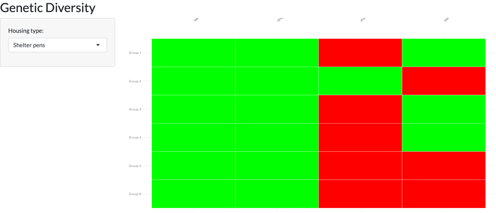
Potential Parents
The Potential Parents tab (issue #48) is also new since the original tutorial-era documentation. It proposes candidate sires and dams for in-colony animals recorded with at least one unknown parent, screening candidates by estimated conception date (birth date minus a Maximum Gestational Period in days – prefilled from the pedigree’s recorded species, e.g. 210 days for rhesus, and adjustable) and by the same minimum sire/dam breeding ages set on the Input tab. Results are shown in a sortable table and downloadable as CSV.
Note
Fixed before publication. An earlier draft of this walkthrough found the shipped
data(examplePedigree)had nofromCenter(colony-origin) column, which this feature requires to identify which animals are in-colony candidates versus animals whose origin is unrecorded – so this section could only show the application’s own correctly-degraded empty-result response rather than a populated example. Fixed by deriving a realfromCentercolumn for the shipped example pedigree from its existingorigin/recordStatusfields; the screenshot below now shows real results. If your own pedigree is missing this column, you will see that same correctly-degraded response instead of the populated table below.
Selecting Find Potential Parents against the full example pedigree reports “Found candidate parents for 1,587 animal(s) with at least one unknown parent,” in a sortable, paginated, CSV-downloadable table.
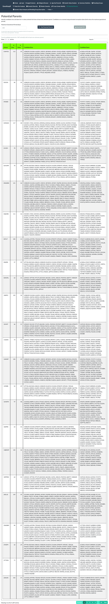
Conclusion
This article covered why nprcgenekeepr exists, how its five function groups map onto the Shiny application’s tabs and onto a scriptable R API, and what it looks like to actually use every tab of that application against the package’s own example data. For more depth on any one capability, see the six feature articles in Table 1; for the story of how the current modular application came to be, see “Engineering nprcgenekeepr 2.0.0”. This article’s own preparation surfaced and fixed three production issues along the way – an Excel-upload sire/dam corruption defect, a non-functional “Custom” breeding-group sex ratio, and a shipped example pedigree missing the column the Potential Parents tab needs to demonstrate populated results – each described where it arose in Section 3. Please report any further questions, comments, or bugs through the GitHub issue tracker.
This work has been supported in part by NIH grants P51 RR13986 to the Southwest National Primate Research Center and P51 OD011092 to the Oregon National Primate Research Center.